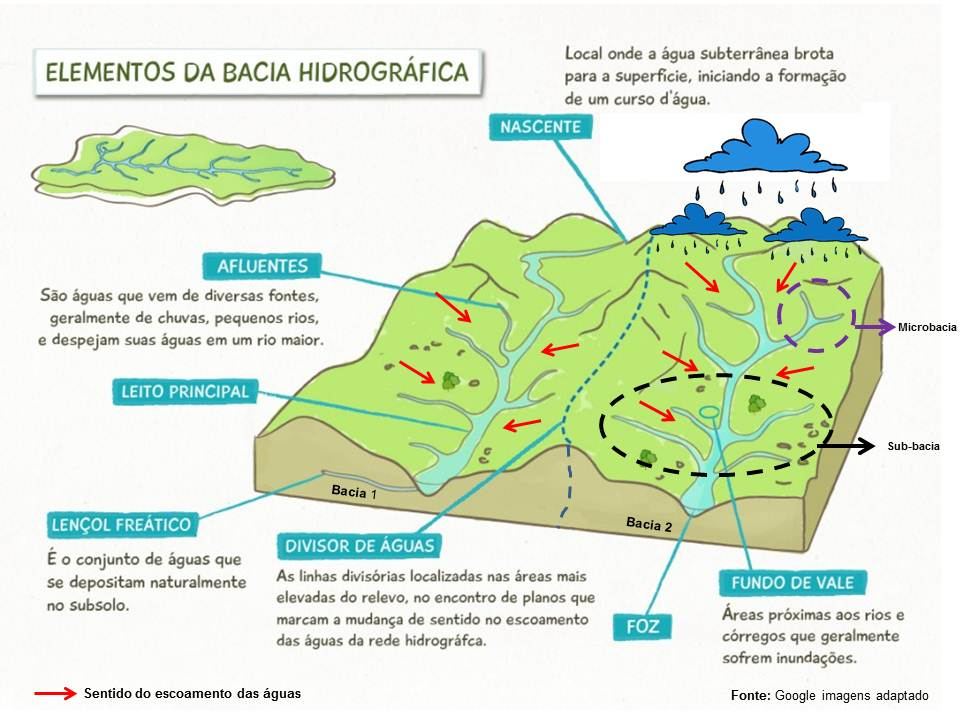
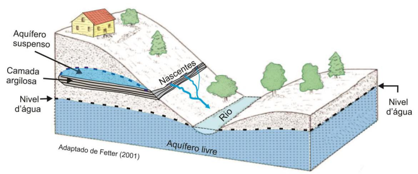
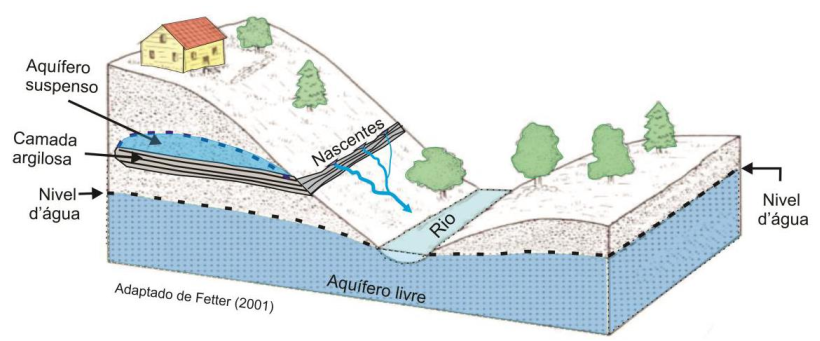

Elementos e Estrutura da Bacia
- Rio principal
- Afluentes e sub-bacias
- Nascente
- Exutório/Foz
- Divisores de água (morros, serras)
- Rede de drenagem interconectada


De forma resumida, uma bacia hidrográfica é toda a área de terra onde a água da chuva escoa naturalmente em direção a um mesmo rio principal, passando por seus afluentes, até alcançar o ponto mais baixo da bacia, chamado de exutório. A área da bacia é delimitada pelos divisores de água, que geralmente são elevações do terreno — como morros e serras — que separam uma bacia da outra.
É como se a superfície da Terra fosse dividida em grandes áreas de captação: toda gota de água que cai dentro desses limites vai seguir o relevo e descer até o rio principal. E é importante destacar que as bacias podem conter sub-bacias, como se fosse uma hierarquia de drenagem: pequenos riachos alimentam córregos, que alimentam rios secundários, que por sua vez alimentam o rio principal.
Um exemplo clássico é a Bacia do Rio Amazonas, a maior do mundo. Ela recebe as águas de centenas de sub-bacias — como as dos rios Tapajós, Madeira e Negro — todas drenando para o rio Amazonas. No Brasil, também temos a Bacia do Rio São Francisco, do Tocantins-Araguaia, entre outras.
Agora, vamos olhar para a estrutura de uma bacia. Ela é composta por:
Todos os rios e cursos d’água de uma bacia formam o que chamamos de rede de drenagem, e essa rede é interconectada, respondendo a processos naturais e intervenções humanas. E geralmente, o nome da bacia é dado pelo nome do rio principal (de maior ordem) — por isso dizemos 'Bacia do Rio São Francisco', 'Bacia do Rio Doce', e assim por diante.
Ordem dos rios:
Esses processos estão diretamente ligados ao ciclo hidrológico, que é o conjunto de movimentações da água entre a atmosfera, o solo, os rios e os oceanos. Dentro de uma bacia, o ciclo da água ocorre em várias etapas: a chuva é a principal entrada; parte da água infiltra no solo e alimenta os aquíferos; parte escoa superficialmente até os rios; outra parte evapora ou é transpirada pelas plantas.
Tudo isso — precipitação, escoamento, infiltração, evaporação e fluxo subterrâneo — acontece dentro da bacia e é influenciado por fatores físicos como o tipo de solo, o relevo, a cobertura vegetal e o uso da terra.
Essas características físicas determinam como a água será distribuída entre infiltração e escoamento. Por isso, bacias com vegetação preservada, solos permeáveis e relevo suave tendem a regular melhor o fluxo da água, enquanto bacias degradadas ou urbanizadas costumam apresentar picos de enchente e escassez hídrica mais frequente.
O conceito análogo para as águas subterrâneas é a Bacia Hidrogeológica (ou bacia aquífera).
Diferença de Limite: O limite de uma bacia hidrogeológica é determinado pelas características e pela estrutura geológica do subsolo (tipos de rochas, falhas, dobras, permeabilidade, etc.) que controlam o fluxo da água subterrânea (o aquífero).
Fluxo Subterrâneo: O fluxo da água subterrânea nem sempre segue a mesma direção da inclinação topográfica da superfície. A água subterrânea pode ser forçada a seguir caminhos complexos e profundos, cruzando os limites superficiais da bacia hidrográfica.
Conexão: Embora possam ter limites diferentes, a água superficial e subterrânea estão intimamente conectadas. A água de chuva que cai na bacia hidrográfica infiltra e recarrega a bacia hidrogeológica, e muitas vezes a água subterrânea descarrega nos rios, mantendo seu fluxo (o chamado "fluxo de base").
Portanto, enquanto o limite da bacia hidrográfica é topográfico, o limite da bacia hidrogeológica é geológico. Eles podem coincidir em parte, mas é comum que sejam distintos.
A troca de água entre os sistemas superficial e subterrâneo é um processo fundamental do ciclo hidrológico. Essa interação é o que garante a sustentabilidade de ambos os recursos.
1. A Troca Mútua (Infiltração e Descarga)
Essa troca ocorre em duas direções principais, dependendo das condições ambientais e do nível do lençol freático em relação ao nível do rio ou lago:
| Processo | Direção do Fluxo | O que acontece |
|---|---|---|
| Recarga (Infiltração) | Superfície → Subterrâneo | A água de precipitação (chuva) ou de corpos d'água superficiais (rios, lagos) escoa pelo solo e rochas, atingindo a zona saturada e reabastecendo o aquífero (lençol freático). |
| Descarga (Fluxo de Base) | Subterrâneo → Superfície | A água subterrânea (aquífero) flui para a superfície e entra nos rios, lagos ou pântanos. É esse fluxo que garante que os rios continuem correndo mesmo durante períodos de estiagem (secas). |
Os rios, por exemplo, podem ser classificados em:
2. Dados de Porcentagem (Quantificação)
A quantificação dessa troca varia drasticamente e não existe uma "porcentagem padrão" global, pois ela depende de fatores locais como:
No entanto, é possível encontrar dados de recarga de aquíferos em estudos específicos de bacias, que nos dão uma ideia da contribuição da chuva para o abastecimento subterrâneo.
| Aquífero | Precipitação Anual Média | Recarga Anual Média (Volume) | Recarga (%) da Precipitação |
|---|---|---|---|
| Alter do Chão | 1.647 mm | 572 mm | 35% |
| Trombetas | 1.954 mm | 473 mm | 24% |
Assim, pode-se dizer em relação as trocas entre águas subterrâneas e superficiais:
Em resumo, a água subterrânea e a superficial formam um sistema integrado e a quantificação exata da troca é complexa, exigindo estudos hidrogeológicos e modelagem específica para cada bacia.
 

Mas uma bacia hidrográfica não é só uma unidade geomorfológica. Ela tem também uma função ecológica fundamental. As bacias atuam como sistemas ecológicos integrados. As áreas de várzea e planície de inundação, por exemplo, funcionam como filtros naturais: retêm sedimentos, removem nutrientes em excesso e ajudam a purificar a água. A vegetação das margens — como as matas ciliares — reduz o escoamento superficial, favorece a infiltração e regula o fluxo dos rios, protegendo contra enchentes e secas severas.
Quando a vegetação está preservada, as bacias conseguem estocar a água das chuvas em seus solos e aquíferos, liberando-a gradualmente. Isso mantém o fluxo regular nos rios, mesmo em períodos de estiagem. Por outro lado, quando há desmatamento ou urbanização excessiva, o escoamento aumenta, a infiltração diminui, e a bacia perde essa capacidade reguladora — o que resulta em enchentes rápidas e secas prolongadas.
Por fim, é importante destacar a relevância da bacia hidrográfica como unidade de planejamento e gestão dos recursos hídricos. No Brasil, a Lei nº 9.433 de 1997 — conhecida como Lei das Águas — estabeleceu que a bacia hidrográfica deve ser a base territorial para a política nacional de recursos hídricos.
Isso significa que o planejamento da oferta e uso da água, o licenciamento de usos, o controle da poluição e os instrumentos de gestão — como os comitês de bacia e os planos de recursos hídricos — são organizados com base nas bacias, e não em limites políticos-administrativos. Essa abordagem reconhece que o que acontece a montante (rio acima) afeta diretamente os usuários a jusante (rio abaixo).
Como exemplo local, podemos mencionar a Bacia do Rio Sapucaí, que é estratégica para o abastecimento público, a agricultura irrigada e a conservação ambiental no sul de Minas Gerais. Conhecer suas características e dinâmica hidrológica é essencial para estudantes e profissionais que atuam na região.
Agora que já entendemos o que é uma bacia hidrográfica e sua importância como unidade natural de organização do território, vamos avançar para um aspecto igualmente fundamental: os dados que precisamos observar, coletar e interpretar quando estudamos uma bacia.
Mas afinal, o que são dados?
Em termos simples, dados são informações cruas ou fatos que podem ser números, letras, símbolos, imagens, sons ou qualquer outra forma de registro. Eles são a matéria-prima da informação e, por si só, não têm um significado claro ou contexto. Para se tornarem úteis, os dados precisam ser organizados, processados e interpretados.
Em detalhes:
Matéria-prima da informação:
Dados são a base para a criação de informações. Eles representam aspectos da realidade, mas não possuem significado intrínseco.
Não estruturados ou estruturados:
Dados podem ser encontrados em diversas formas, desde texto livre e comentários de clientes até tabelas com valores numéricos e categorias bem definidas.
Fontes variadas:
Dados podem ser coletados por meio de observação, medição, pesquisa ou qualquer outro processo que permita o registro de informações.
Necessidade de interpretação:
Para que os dados sejam úteis, eles precisam ser processados e analisados. Essa análise transforma os dados brutos em informações relevantes e significativas, que podem ser usadas para tomada de decisões.
Exemplos de dados:
- Um número de telefone.
- Um nome de pessoa.
- A temperatura de um ambiente.
- A cor de um carro.
- Um registro de vendas.
- Comentários de clientes sobre um produto.
- Um resultado de pesquisa.
Em resumo, dados são a base para a informação, e a informação é essencial para o conhecimento e a tomada de decisões.
E qual a diferença entre dados x informação x conhecimento x sabedoria?
Dados: São elementos brutos e não processados, como números, palavras, símbolos ou fatos isolados, sem significado intrínseco. Por exemplo, a temperatura registrada em um termômetro.
Informação: Quando os dados são organizados, processados e contextualizados, eles se tornam informação. A informação possui significado e pode ser utilizada para tomada de decisão ou para gerar novos conhecimentos. Por exemplo, um relatório com a média da temperatura de um mês.
Conhecimento: É a compreensão profunda da informação, baseada na experiência, aprendizado e reflexão. Envolve a capacidade de interpretar a informação, relacioná-la com outros conhecimentos e aplicá-la em situações específicas. Por exemplo, saber que temperaturas baixas podem causar congelamento e que medidas de segurança devem ser tomadas.
Sabedoria: É a aplicação do conhecimento de forma sábia, ética e prudente, levando em consideração as consequências das ações. Envolve discernimento, bom senso e a capacidade de tomar decisões acertadas em diferentes situações. Por exemplo, saber como e quando usar o conhecimento sobre baixas temperaturas para evitar acidentes.
Classificação em relação à coleta.
Dados primários e secundários representam diferentes abordagens na coleta de informações para pesquisa ou tomada de decisões, com características distintas. Dados primários são coletados diretamente pela fonte, para um propósito específico, enquanto dados secundários já existem e foram coletados por outros para diferentes propósitos.
Dados Primários:
Coleta: Dados coletados diretamente pela fonte, como por meio de pesquisas, entrevistas, observações, experimentos, etc.
Especificidade: São específicos para a pesquisa ou problema em questão, atendendo às necessidades do pesquisador.
Controle: Permitem maior controle sobre o tipo, qualidade e profundidade das informações coletadas.
Custo: Geralmente mais caros e demorados de obter, devido ao esforço de coleta.
Disponibilidade: Podem ser menos disponíveis e exigir mais tempo para serem coletados.
Dados Secundários:
Coleta:
Dados que já foram coletados por outras fontes, como artigos científicos, relatórios, pesquisas anteriores, bancos de dados, etc.
Generalidade:
São mais amplos e gerais, podendo não atender especificamente às necessidades da pesquisa.
Custo:
Geralmente mais baratos e fáceis de obter, pois já estão disponíveis.
Disponibilidade:
São mais facilmente acessíveis e podem ser encontrados em diversas fontes.
Verificação:
A verificação da qualidade e precisão pode ser mais difícil, pois a fonte original não é o pesquisador.
Em resumo, a escolha entre dados primários e secundários depende dos objetivos da pesquisa, recursos disponíveis e necessidade de especificidade e controle sobre a coleta.
Niveis dos dados conforme o grau de derivação.
O termo “dados de primeiro grau, segundo grau etc.” pode variar conforme a área (estatística, ciências sociais, geografia, hidrologia), mas em geral está relacionado ao grau de derivação ou transformação dos dados.
1. Dados de primeiro grau (ou primários)
São os dados brutos, coletados diretamente na fonte, sem processamento ou modelagem prévia.
Exemplos em bacias hidrográficas:
- Precipitação medida em pluviômetros
- Vazão registrada em uma estação fluviométrica
- Amostras de qualidade da água (pH, turbidez, OD) coletadas no campo
2. Dados de segundo grau (ou secundários / derivados)
Resultam de algum tipo de processamento, agregação ou cálculo a partir dos dados primários.
Exemplos:
- Cálculo de índices pluviométricos mensais ou anuais a partir de séries diárias de chuva
- Estimativas de evapotranspiração usando dados meteorológicos
- Modelos digitais de elevação (MDEs) gerados a partir de pontos de altitude
3. Dados de terceiro grau (ou compostos / integrados)
São aqueles obtidos por integração de múltiplas fontes ou modelagens complexas, indo além de um único cálculo direto.
Exemplos:
- Cálculo do balanço hídrico de uma bacia (precipitação – evapotranspiração – escoamento)
- Mapas de uso e cobertura da terra produzidos por classificação de imagens de satélite + validação em campo
- Modelagem de cenários de disponibilidade hídrica integrando clima, geologia e uso do solo
A análise de uma bacia hidrográfica exige uma abordagem integradora, e isso significa trabalhar com uma grande variedade de dados. Esses dados são a base para entender o comportamento dos rios, os processos ecológicos e hidrológicos que ocorrem ali, e também os impactos das atividades humanas. Por isso, o primeiro passo é conhecer quais são os tipos de dados mais relevantes e como eles se agrupam em categorias.
Vamos aqui dividir os dados em grupos: hidrológicos, meteorológicos, geoambientais, de qualidade da água, biológicos e socioeconômicos.
Esses são os dados que descrevem diretamente o comportamento da água nos rios e nas bacias. São dados essenciais, tanto para diagnósticos ambientais quanto para modelagens e previsões.
Entre eles, o principal é o dado de precipitação, ou seja, a quantidade de chuva que cai em determinado local, normalmente medida em milímetros. Esses dados são coletados em estações pluviométricas, que podem ser manuais ou automáticas, e nos ajudam a quantificar a entrada de água no sistema da bacia. Por exemplo, uma chuva de 50 mm significa 50 litros de água por metro quadrado de solo.
Outro dado central é a vazão. A vazão representa o volume de água que escoa por um ponto do rio em um determinado intervalo de tempo, e é geralmente expressa em metros cúbicos por segundo. Isso nos permite entender quanto de água o rio está transportando — algo fundamental para calcular a disponibilidade hídrica, planejar abastecimento, prever enchentes ou avaliar o impacto de intervenções.
Temos ainda os dados de nível dos rios, também chamados de cotas, que indicam a altura da lâmina d’água em relação a um ponto de referência. Muitas vezes, o nível do rio é monitorado continuamente por sensores ou réguas linimétricas e pode ser convertido em vazão usando curvas-chave específicas da seção do rio.
Esses três conjuntos — precipitação, vazão e nível — formam o núcleo da hidrologia de uma bacia, e são indispensáveis para compreender sua dinâmica hídrica.
Os dados meteorológicos complementam os hidrológicos, pois descrevem o comportamento da atmosfera sobre a bacia. Eles são especialmente importantes para o cálculo da evapotranspiração e do balanço hídrico, que mede as entradas e saídas de água do sistema.
Aqui temos variáveis como:
Esses dados são geralmente obtidos em estações meteorológicas automáticas ou convencionais, como as do INMET ou de universidades e institutos estaduais. Com séries temporais desses dados, conseguimos estimar, por exemplo, quanta água uma floresta consome por transpiração ou quanta água evapora de um reservatório.
Entramos agora nos dados que caracterizam o território físico e o uso humano da bacia. Esses dados são fundamentais para entender os fatores que controlam o escoamento, a infiltração, a erosão e a poluição.
Primeiramente, os dados de uso e cobertura da terra. Eles nos mostram como o solo da bacia está sendo ocupado: se há floresta nativa, pastagem, agricultura, área urbana, corpos d’água, entre outros. Esses dados são obtidos via sensoriamento remoto, por imagens de satélite que são classificadas em mapas temáticos.
O projeto MapBiomas, por exemplo, disponibiliza séries históricas de uso e cobertura da terra para todo o Brasil desde 1985. Com isso, podemos verificar como a ocupação do território vem mudando — por exemplo, o avanço da agricultura, a perda de vegetação nativa, ou a expansão urbana.
O segundo tipo é o dado de topografia ou relevo, geralmente representado por Modelos Digitais de Elevação — os famosos MDEs ou DEMs. Esses modelos mostram a altitude de cada ponto da superfície e são usados para calcular:
Outro componente essencial são os dados geológicos. Eles descrevem as características e a distribuição das rochas e solos na bacia, incluindo litologia, estrutura geológica (falhas, fraturas, dobras) e espessura do regolito. Esses dados influenciam diretamente a permeabilidade, a recarga de aquíferos, a estabilidade das encostas e a ocorrência de minerais ou poluentes naturais. Por exemplo, bacias sobre rochas areníticas tendem a ter maior infiltração e aquíferos mais produtivos, enquanto rochas cristalinas podem apresentar menor capacidade de armazenamento de água subterrânea.
Combinando uso do solo, relevo e geologia, conseguimos estimar de forma mais precisa a capacidade de infiltração da água, a velocidade do escoamento, a susceptibilidade à erosão e o risco de contaminação de recursos hídricos.

Além da quantidade de água, precisamos conhecer sua qualidade. Isso é especialmente relevante para o abastecimento humano, para a manutenção da biodiversidade aquática e para a avaliação de impactos ambientais.
Esses dados envolvem a medição de parâmetros físico-químicos, como:
Além disso, em contextos mais críticos, pode-se medir a presença de poluentes específicos, como metais pesados, agrotóxicos ou micro-organismos patogênicos.
Esses dados são obtidos por campanhas de campo, por sensores automáticos ou por redes de monitoramento como a da ANA, que publica dados em portais abertos como o HidroWeb.
No estudo de bacias hidrográficas, os dados biológicos desempenham um papel crucial para compreender a saúde e o funcionamento dos ecossistemas aquáticos e terrestres interligados. Eles fornecem informações valiosas sobre a diversidade de vida presente, a qualidade da água, o impacto de atividades humanas e as tendências ecológicas ao longo do tempo. Esses dados incluem a identificação e quantificação de espécies de flora e fauna, desde microrganismos e invertebrados aquáticos até peixes, aves e mamíferos que dependem da bacia para sua sobrevivência.
A coleta de dados biológicos pode envolver diversas metodologias, como a amostragem de bentos (organismos que vivem no fundo de rios e lagos), análises de diversidade de peixes e macroinvertebrados, algas, perifíton e zooplâncton, o monitoramento de comunidades vegetais ripárias (às margens dos rios) e a observação de indicadores de biodiversidade. Por exemplo, a presença ou ausência de certas espécies de invertebrados aquáticos, conhecidas como bioindicadores, pode revelar muito sobre a poluição da água. Da mesma forma, a estrutura e composição da vegetação ciliar (próxima à água) são fundamentais para a proteção das margens, a manutenção da temperatura da água e a oferta de habitats para a fauna.
A interpretação desses dados biológicos permite avaliar a integridade ecológica da bacia hidrográfica, identificar áreas de degradação e planejar ações de conservação e recuperação. Ao cruzar informações biológicas com dados físico-químicos da água, hidrológicos e de uso do solo, é possível ter uma visão holística do ecossistema e compreender as relações de causa e efeito que impactam a biodiversidade. Em última análise, o monitoramento contínuo e a análise dos dados biológicos são essenciais para uma gestão eficaz dos recursos hídricos e para garantir a sustentabilidade das bacias hidrográficas.
Finalmente, temos os dados que descrevem os aspectos humanos e econômicos da bacia. Eles são essenciais para entender a demanda por água, a pressão sobre os ecossistemas, os conflitos entre usuários e os riscos sociais e sanitários.
Podemos destacar:
Esses dados são geralmente obtidos de fontes como o IBGE, SNIS, ANA, e também podem ser organizados por município, por setor de atividade ou por unidade territorial.
Todos esses dados — hidrológicos, meteorológicos, geoambientais, de qualidade da água e socioeconômicos — se articulam como partes de um grande quebra-cabeça. Juntos, eles permitem construir uma visão sistêmica da bacia hidrográfica, entendendo tanto o funcionamento natural do sistema quanto os impactos humanos que sobre ele incidem.
Com esses dados, podemos realizar diagnósticos, elaborar planos de manejo, simular cenários futuros, prevenir desastres e promover políticas públicas mais justas e sustentáveis.
Mais do que coleções de números, esses dados são ferramentas para proteger um bem comum: a água e os ecossistemas que dela dependem.
https://gustavoferreiraafonso-git.github.io/dadosbaciashidrograficas/
Autor: Gustavo Ferreira Afonso
Contato: gustavo.afonso@unifal-mg.edu.br